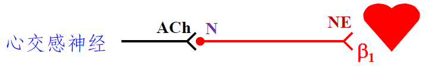
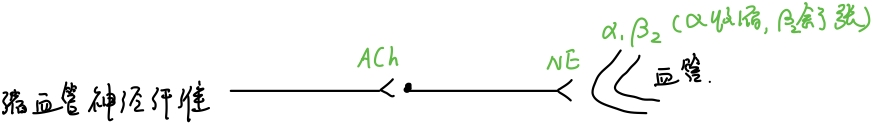

生物医学工程 | 解剖学 - 循环系统
体液分布与内环境稳态、血液成分与功能
体液：分为细胞内液和细胞外液
内环境：细胞外液
血液成分：血浆+血细胞（红细胞+白细胞+血小板）
血液功能：运输，防御和保护功能，维持稳态

血液
血浆
血浆蛋白：清蛋白（维持血液胶体渗透压），球蛋白，纤维蛋白原（参与凝血）
非蛋白氮：血浆中除了蛋白质外的含氮物质所含的氮。由肾排除
血浆渗透压=血浆晶体渗透压+血浆胶体渗透压
| 血浆晶体渗透压 | 血浆胶体渗透压 |
|---|---|
| 主要 | 小部分 |
| 晶体物质形成 | 血浆蛋白形成 |
| 维持细胞水平衡 | 维持血管水平衡 |
ph：偏碱性。靠缓冲对维持酸碱性
最重要的缓冲对：/
红细胞
形态：无细胞核，无细胞器，中央双凹的圆盘形
生理特性：可塑变形性，悬浮稳定性（血细胞能稳定悬浮于血浆中），渗透脆性（低渗溶液中吸水膨胀破裂）
生成原料：血红蛋白（铁和蛋白质）
成熟因子：叶酸和维生素
促红素：促进红细胞的增值和分化。（促进红细胞生成素和爆式促进因子）
寿命：约120天。
破坏：破损溶血（血管内），被巨噬细胞吞噬（血管外）
红细胞的生成与代谢涉及到的器官：骨髓，肾脏（生成-分泌促红素），肝脏（降解）
白细胞
分类：粒细胞（中性粒细胞、嗜酸性细胞、嗜碱性细胞）、单核细胞、淋巴细胞
渗出：除淋巴细胞外，所有白细胞都能做变形运动，穿过毛细血管壁进入组织
趋化性：白细胞具有趋向某些化学物质游走的特性
基本功能：参与机体防御机制
血小板
功能：生理性止血
来源：巨核细胞裂解碎片
生理性止血
生理性止血概念：正常人血管损伤后几分钟内血流可以自行停止
过程：①受损局部小血管收缩；②血小板止血栓形成；③血小板止血栓周围形成纤维蛋白网；④血凝块收缩和血栓溶解
血液凝固：血液从流动的液体状态变为不流动的凝胶状态，是由凝血因子参与的一系列复杂的酶促反应过程
凝血因子：血浆与组织中直接参与血凝的物质
激活因子X的过程可以分为内源性途径和外源性途径
内源性途径：凝血因子全部来源于血液
外源性途径：凝血因子Ⅲ来源于组织
抗凝意义：防止发生广泛性凝血。细胞抗凝系统（血管内皮细胞+网状内皮细胞）+体液抗凝系统
纤溶意义：防止血栓形成，保持血流通畅。
过程：激活纤溶酶原→纤维蛋白和纤维蛋白原的降解
循环与储备血量\红细胞凝集\凝集原\凝集素\血型分类\交叉配血概念
循环血量：大部分血液在心血管中流动。
储备血液：小部分血液滞留在肝肺等处。
红细胞凝集：不同血型的血液混合，红细胞将凝集成簇
凝集原：红细胞膜上的特异抗原在凝聚反应中起抗原作用
凝集素：血清中能与红细胞膜上的凝集原起反应的特异抗体
血型分类：ABO（AB-万能受血者，O万能输血者）
交叉配血实验——抗原-抗体反应
循环系统
循环管道的一些基本概念
体循环：左心室-主动脉-毛细血管-静脉-上下腔静脉-右心房
肺循环：右心室-肺动脉干-肺毛细血管-肺静脉-左心房
肺循环-动脉血管流静脉血；静脉血管流动脉血
心脏结构
心底：大部分左心房，小部分右心房
心尖：左心室
内腔构造：左心房，左心室，右心房，右心室
传导系统：窦房结，房室交界，房室束，浦肯野纤维网
窦房结：心跳起搏点
房室交界：兴奋由心房传入心室的唯一途径。房室结无自律性，延搁兴奋传到心室
房室束：分为左右两支
浦肯野纤维网
血管
动静脉结构区别：静脉管腔大，管壁薄软，弹性小，含有静脉瓣
大中小动脉结构区别：大动脉（管壁中富含弹性纤维），中动脉（平滑肌丰富，收缩能力强，交感神经纤维分布），小动脉（对血流阻力大）
静脉瓣：袋口朝心脏，防止血液逆流，有利于静脉内的血液向心回流
主动脉主要分支：升主动脉（发出2侧枝：左右冠状动脉），主动脉弓（头臂干，左颈总动脉，左锁骨下动脉），降主动脉（以主动脉裂孔为界，分为胸主动脉和腹主动脉）
静脉角：颈内静脉和锁骨下静脉汇合处，同时也是右淋巴导管和胸导管注入静脉的位置
肝门静脉：腹腔内不成对脏支（毛细血管）→肝门静脉→肺（毛细血管）→肝静脉
血管分布规律：对称性分布，与功能相适应（血管分布与器官功能相适应），与神经伴行，最短距离分布
淋巴产生与运输的机制
淋巴最终汇入静脉
淋巴产生：组织液和毛细淋巴管内淋巴液的压力差（动力），组织液（来源）
淋巴运输：淋巴瓣膜+淋巴管壁的平滑肌收缩→“淋巴管泵”
胸导管与右淋巴导管
全身的淋巴干汇合成两条最大的淋巴管——胸导管+右淋巴管
胸导管：全身最长最粗的淋巴导管，注入左静脉角，收集左上，全下的淋巴
右淋巴管：手机右上的淋巴，注入右静脉角
心肌生物电
工作细胞与自律细胞的动作电位产生的机理、异同点
工作细胞和自律细胞
心肌细胞=工作细胞+自律细胞
工作细胞：构成心房壁和心室壁的细胞。兴奋性，传导性，收缩性。 作用：收缩
自律细胞：构成特殊传导系的心肌细胞。兴奋性，传导性，自律性。 作用：产生传播兴奋，控制心节律性活动
心肌细胞：兴奋性，传导性，收缩性，自律性。
平滑肌细胞：兴奋性，自律性，传导性，收缩性
工作细胞动作电位 机理

自律细胞动作电位 机理
| 0期 去极化 | -70 → -40mV | 激活Ca通道，引起Ca内流 |
|---|---|---|
| 4期 自动复极化 | （慢反应细胞）K+外流 ↓，Ca+内流 ↑ ** Ca+内流速度**＞K+外流，自动去极化 （快反应细胞）慢Na+通道，Na+内流，自动去极化 |
| 快反应细胞 | 慢反应细胞 | |
|---|---|---|
| 定义 | 快Na+通道开放引起快速去极化 如浦肯野细胞 | 慢Ca+通道开放引起缓慢去极化 如窦房结P细胞 |
| 对比特点 | 最大复极电位和阈电位低 0 期去极化幅度低，速度慢，时程长，不陡峭 无明显的复极1期和2期 4 期自动去极化速度快 |
区别
自律性细胞4期自动去极化到达阈值，引发新的动作电位
心肌细胞兴奋性、自律性、传导性
电生理（兴奋性，自律性，传导性）；机械特性（收缩性）
兴奋性
影响因素：
- 静息电位与阈电位的差值；
- 离子通道状态（快-Na是否处于静息状态；慢-Ca是否处于静息状态）
周期性变化：有效不应期（绝对不应期→局部兴奋期（可兴奋不可产生动作电位））
→相对不应期（阈上刺激可产生动作电位）
→超常期（阈下刺激可产生动作电位）
TIP：和神经纤维对比，没有低常期
自律性
心脏起搏点：自律性等级有差异（正常起搏点-窦房结，潜在起搏点）
窦房结对潜在起搏点的控制是通过抢先占领（潜在起搏点未到达阈电位就被窦房结的AP带跑）和超速驱动压抑（自律细胞受到快于固有节律的刺激发生超速驱动，超速驱动停止后需要一段静止期才能逐渐恢复自律性）来实现的
影响因素（4期去极化速度）：
- 最大复极电位与阈电位之间的差距；
- 4期去极化速度（交感-去甲肾上腺素-自律性↑，迷走-乙酰胆碱-自律性↓）
传导性（用传播速度衡量）
功能合胞体：兴奋扩布整个心脏，实现心肌细胞的同步活动
房室延搁：兴奋在房室交界区传导速度缓慢而使兴奋在此延搁一段时间。
意义：不会发生房室收缩重叠，有利于心室充盈射血
传导顺序：窦房结-左右心房-房室交界区-房室束-浦肯野细胞-心室肌
影响因素：
- 结构因素：心肌细胞的直径（直径大，传导快）；细胞间缝隙连接的数量和开放状态（数量多，传导快）；
- 生理因素：动作电位0期去极化速度和幅度；膜电位水平；邻近未兴奋区肌膜的兴奋性
收缩性
特点：1）对细胞外液的Ca2+的依赖性；2）“全或无”式收缩；3）不发生完全强直收缩；4）可发生期前收缩
理化因素对心肌生理特性的影响（高钾\高钙）
K+：兴奋性先↑后↓（K+显著升高 → Na+通道失活 → 丧失兴奋性），收缩性↓（K与Ca竞争抑制性，Ca内流↓）
Ca2+：收缩性持续↑（先：兴奋-收缩偶联增强）（后：钙僵-持续缩短）
心动周期中各事件的基本过程
房缩期→室缩期→全心舒张期
心房和心室的舒张期均长于收缩期
| 等容收缩期 | 房室瓣关闭 到 主动脉瓣开启的这段时间 |
|---|---|
| 快速射血期 | 心室肌收缩导致心室压上升，血液冲开主动脉瓣，快速射血到主动脉。室内压和主动脉压到达峰值 |
| 减慢射血期 | 室内压和主动脉压下降，血液顺着惯性缓慢进入主动脉 |
| 等容舒张期 | 室内压快速下降 |
| 快速充盈期 | 心室舒张导致心室压下降，血液冲开房室瓣，快速充盈心室。 |
| 减慢充盈期 | 血液顺着惯性缓慢进入心室 |
| 心房收缩期 | 心房收缩将少量血液射入心室 |
| 时间 | 血液 | 压力梯度 | |
|---|---|---|---|
| 等容收缩期 | 房室瓣关闭，主动脉瓣关 | 停留在心室 | 房内压＜室内压＜主动脉压 |
| 快速射血期/减慢射血期 | 房室瓣关闭，主动脉瓣开 | 快速射入主动脉 | 房内压＜主动脉压＜室内压 |
| 等容舒张期 | 房室瓣关闭，主动脉瓣关 | / | 房内压＜室内压＜主动脉压 |
| 快速充盈期/减慢充盈期/心房收缩期 | 房室瓣开启，主动脉瓣关 | 灌入心室 | 室内压＜主动脉压，房内压 |
心脏各结构在心动周期中的各自作用
压力梯度是推动血液在心房、心室和主动脉间流动的主要动力
心室肌的收缩和舒张是造成室内压力变化从而导致心房与心室之间以及心室与主动脉之间产生压力梯度的根本原因
心脏瓣膜的启闭活动对室内压力的变化起着重要作用，也能保证血液沿一个方向流动
心输出量相关概念、影响因素
心输出量相关概念
【每搏输出量=舒张末期容积 - 收缩末期容积】：一侧心室在一次心搏中射出的血液量
【射血分数=搏出量/心室舒张末期容积×100%】
【心输出量=搏出量×心率】：一侧心室每分钟射出的血液总量
【心指数=心输出量/体表面积】：单位体表面积计算的心输出量
【每搏功=搏出量×（平均动脉压-平均心房压）】心室收缩一次所作的功
注意搏出量要从L转换为N。所以实际上是：每搏功J=搏出量L×13.6kg/L×9.8N/kg×（平均动脉压mmHg-平均心房压mmHg）×0.001
【每分功J/min=每搏功J×心率（次/min）】心室每分钟输出量
心力储备：心输出量随机体代谢需要而增加的能力。取决于每搏输出量和心率储备
影响因素
搏出量取决于前负荷、后负荷和心肌收缩力
-
【前负荷 】：心室舒张末期容积→心室肌初长度→心室前负荷
前负荷对搏出量的影响：
-
异长自身调节（Starling机制，通过心肌细胞本身初长度的改变而引起心肌收缩强度的变化）——对搏出量进行调节，使心室射血量与静脉回心血量保持平衡
-
静脉回心血量>射血量→充盈压（舒张末期心室总充盈量）↑→ Starling机制（异长自身调节）→搏出量↑（回流多，射血多）
影响前负荷的因素：静脉回心血量，射血后心室内剩余血量
-
-
【后负荷】：心室射血时遇到的阻力是主动脉压
后负荷对搏出量的影响：（Frank-Starling机制）动脉血压↑→搏出量↓→剩余血量↑→舒张末期容积↑→异长自身调节→心肌收缩↑→搏出量↑
影响因素：心室射血期的室壁张力（+）
-
【心肌收缩力】
心肌收缩能力对搏出量的影响：等长自身调节（通过心肌收缩能力的变化来调节搏出量）
血压↑→ 搏出量↓ →等长自身调节(心肌初长度不变) →心肌收缩能力↑ →搏出量↑
影响因素：活化横桥数目（增大Ca浓度或者增加肌钙蛋白的亲和力）；肌凝蛋白头部ATP酶活性（甲状腺激素+）
-
【心率】——神经
心率对搏出量的影响：一定范围内，心率↑→搏出量↑（过大的话充盈不足）
影响因素：交感↑→去甲肾上腺素，甲状腺素↑→心率↓；迷走↑→心率↓
心音基本概念
心音：心脏收缩、瓣膜关闭、血液速度改变形成的涡流，血液撞击心室壁和大动脉壁引起的振动所产生
第一心音：发生在心缩期，房室瓣关闭产生，是心室收缩开始的标志
第二心音：发生在心舒期，半月瓣关闭产生，是心室舒张开始的标志
心电图基本概念
心电图：人体表面用电极记录到心脏兴奋过程中发生的电变化
P波：反应心房去极化过程，无法记录
QRS波群：反应心室去极化过程
T波：反应心室复极化过程
PR间期：反应房室传导时间
S-T段：反应平台期
QT间期：标志心室开始兴奋到完全复极
心电图记录的是许多心肌细胞电活动综合效应在体表的反映
层流\湍流发生位置、血流阻力及影响因素
层流（各个质点运动方向一致）：发生在小血管内
湍流（各个质点运动方向不一致）：血流速度快，血管口径大，血液粘度低，血流遇到障碍，血流流经血管分叉处和粗糙面
血流阻力：血液在血管内流动所遇到的阻力
血流阻力影响因素：血管半径和血液粘滞度
血液粘滞度影响因素：红细胞比容，血液切变速率，血脂，血管直径
动脉血压形成原理与影响因素
动脉血压≈血压≈主动脉压
形成原理
前提：足够的血量充盈
原动力：心肌收缩
阻力：小动脉和微动脉的外周阻力
条件：主动脉和大动脉的管壁弹性（大动脉管壁的弹性回缩力是心舒期推动血液流动的继发性动力）
收缩压/舒张压：指的都是主动脉血压
影响因素
收缩压主要反应每搏输出量的大小；舒张压主要反应外周阻力的大小
| 条件 | 收缩压 | 舒张压 | 脉压 |
|---|---|---|---|
| 每搏输出量↑ | ↑↑ | - | ↑ |
| 心率↑ | ↑↑ | ↑ | ↓ |
| 外周阻力↑ | ↑ | ↑↑ | ↓ |
| 大动脉管壁的弹性回缩力↓ | ↑↑ | ↓↓ | ↑↑ |
脉搏概念与形成机制
动脉脉搏=脉搏：动脉内的压力和容积发生周期性变化而导致动脉管壁发生周期性波动
形成机制：当左心室收缩时将血液射入主动脉，由于主动脉的顺应性及外周阻力的作用，使心缩期射入主动脉血液有一部分暂时存留在动脉内，故动脉管壁被动扩张；当心室舒张停止射血时，大动脉弹性回位，就形成了血管的搏动。（部分血液留在动脉内→动脉扩张→心室舒张停止射血→大动脉弹性回位）
脉搏沿着动脉管壁传播，速度快于血液流速
静脉血压影响因素、中心与外周静脉压、静脉回心血量影响因素
影响因素：重力→静水压（取决于血管所处位置和右心房之间的垂直距离）
中心静脉压：右心房和胸腔内大静脉的血压（右心房的血压最低≈0）
外周静脉压：各器官静脉的血压
静脉回心血量：
| 体循环平均充盈压 | + |
|---|---|
| 心脏收缩力 | +（收缩力↑→心室末期容积↓→室内压↓→回心血量↑） |
| 体位改变 | 直立→跨壁压↑→静脉容积↑→回心血量↓ |
| 骨骼肌的挤压作用 | + |
| 呼吸运动 | 吸气促进（胸腔负压） |
| 结构方面—静脉瓣 | （书上没有，自己补充的） |
微循环、组织液、淋巴
微循环
微循环：微动脉和微静脉之间的血液循环
组成（7部分）：微动脉（总闸门），后微动脉，毛细血管前括约肌（分闸门，受局部代谢产物调控——酸的刺激），真毛细血管，通血毛细血管，动静脉吻合支，微静脉
通路：
| 迂回通路 | 营养通路 | 微动脉，后微动脉，真毛细血管网，微静脉 |
|---|---|---|
| 直捷通路 | 保证静脉回流 | 微动脉，后微动脉，通毛细血管网，微静脉 |
| 动静脉短路 | 参与体温调节 | 微动脉，动静脉吻合支，微静脉 |

微循环的特性：血压低，血流慢，交换面积大
组织液生成原理\影响因素
原理：血浆中的液体通过毛细血管壁过滤形成，再由毛细血管重吸收。
有效过滤压=（毛细血管血压+组织液胶体渗透压）-（血浆胶体渗透压+组织液静水压）
影响因素：毛细血管血压（血压低，组织液生成少），血浆胶体渗透压（渗透压↓，组织液↑），毛细血管壁的渗透性，淋巴回流
淋巴生成原理与意义
概念：组织液进入淋巴管生成淋巴液
生成原理：毛细淋巴管的结构特点（单向开放），生成动力（组织液-淋巴液压力差）
意义：回收蛋白质，运输脂肪以及其他营养物质，调节体液平衡，防御和免疫功能
对心脏的调节
神经作用于心脏(交感\副交感对心脏的变力\时\传导作用)
节前纤维/节后纤维
心交感神经→ACh · N1型胆碱受体→去甲肾上腺素NE· β1受体→cAMP↑

| 正性变时作用 | 4期去极化速度↑→心率↑ |
|---|---|
| 正性变传导作用 | Ca内流↑→0期上升幅度速度↑→房室交界传导↑ |
| 正性变力作用 | Ca内流↑→2期Ca内流↑→心肌收缩能力↑ |
心迷走神经→ACh · N1型胆碱受体→ACh· M受体→cAMP↓
| 负性变时作用 | 4期去极化速度↓→心率↓ |
|---|---|
| 负性变传导作用 | Ca内流↑→0期上升幅度速度↓→房室交界传导↓ |
| 负性变力作用 | Ca内流↑→2期Ca内流↓→心肌收缩能力↓ |
神经作用于血管（交感缩血管纤维、心血管中枢）
维持一定的紧张度→维持一定的血压→满足各个器官的灌注
作用于平滑肌


作用：调节血液在全身发分配
心血管中枢：延髓（基本中枢），脊髓（传出信息的最后公路）
压力感受性反射-通路\效应\意义
通路：
意义：快速调节动脉血压，使其维持相对稳定
压力感受器——颈动脉窦+主动脉弓
化学感受器——颈动脉体+主动脉体
压力感受器效应：血压↑→压力感受器冲动↑→心交感，缩血管神经↓，心迷走↑→心率↓，心输出率↓，血压↓
化学感受器效应：↑→化学感受器冲动↑→迷走紧张→血管收缩；心率↓，搏出量↓；呼吸加深加快→血压↑
激素调节（肾上腺素N、去甲肾上腺素NE、肾素-血管紧张素）
| 肾上腺素N | 去甲肾上腺素NE | |
|---|---|---|
| 结合部位 | α，β肾上腺素受体 | α肾上腺素能受体 |
| 效果 | 心脏+（与β） 血管收缩（与α）舒张（与β） | 舒张压收缩压↑，升血压 |
肾素-血管紧张素：缩血管
“最”
清蛋白：血浆中浓度最高的蛋白成分
纤维蛋白原：血浆中分子量最大、浓度最低的成分
血浆中最主要的缓冲对：NaHCO3/H2CO3
单粒细胞：体积最大的白细胞
血小板：血液中最小的有形成分
纤溶酶：血浆中活性最强的蛋白酶
右心室：最前方的心腔
右心房：最靠右的心腔
左心房：最后方的心腔
左心室：最靠左的心腔
卵圆窝：房间隔最薄的地方
窦房结自律性最高
末梢浦肯野细胞直径最大、传导速度最快；结区浦肯野细胞直径最小、传导速度最慢
心室内传导系统的传导速度最快
心动周期的一堆最
肱深动脉：肱动脉最主要分支
脾动脉：腹腔干最大分支
颈外静脉：颈部最大的浅静脉
下腔静脉：人体最粗大的静脉干
大隐静脉：全身最长的浅静脉
胸导管：全身最大的淋巴管
主动脉压力最高，动脉总截面积最小
血流速度：主动脉最快、毛细血管最慢
动-静脉短路：最短，最直，阻力最小，流速最快，流域最小
毛细血管：管径最细，分布最广的血管
最主要的心血管活动调节方式：神经调节
课后习题
血液凝固过程
小动脉收缩，血小板（聚集+释放凝血因子）
（一）因子X的激活：可以通过内源性途径或者外源性途径完成
（二）凝血酶原（因子Ⅱ）的激活：凝血酶原激活物的形成是整个凝血过程的限速步骤
（三）纤维蛋白原（因子Ⅰ）转变成纤维蛋白
内源性途径：完全依靠血浆内凝血因子激活因子X而引发的凝血过程
因子ⅩⅡ与暴露的血管内膜下胶原纤维接触，从而因子ⅩⅡ被激活，继而启动凝血过程
外源性途径：依靠血管外组织释放因子III激活因子X的过程
凝血因子Ⅲ来自于组织，而非血管创伤出血使因子III进入血管内，激活VII
声明：此blog内容为上课笔记，仅为分享使用。部分图片和内容取材于课本、老师课件、网络。如果有侵权，请联系aursus.blog@gmail.com删除。